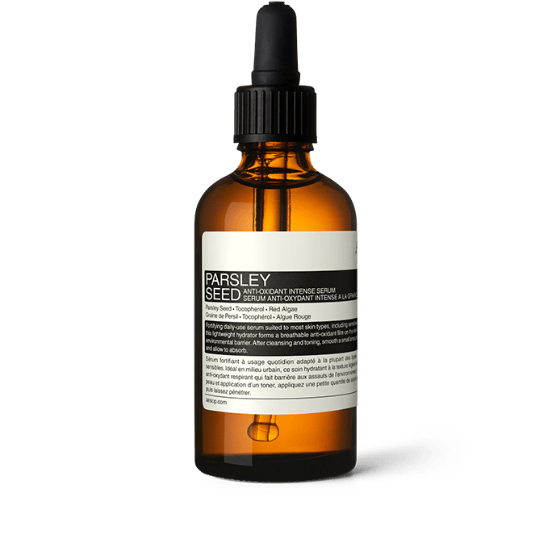
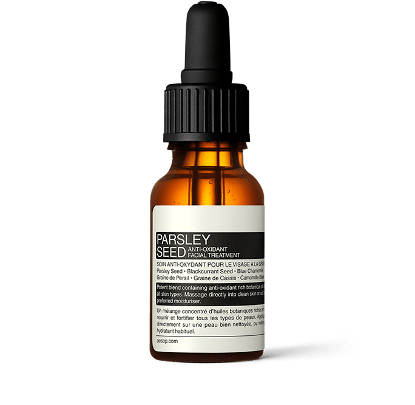
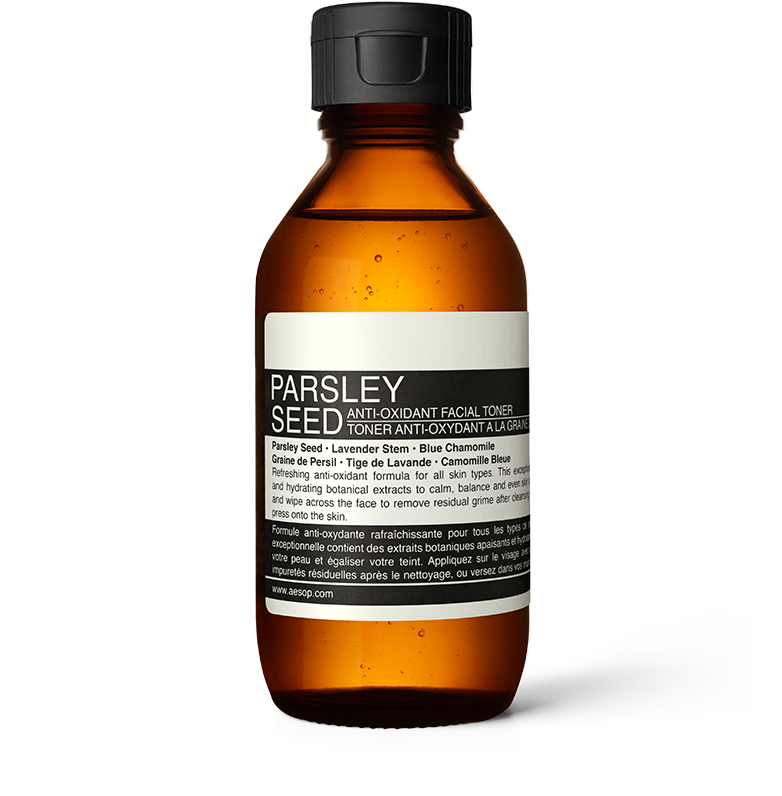
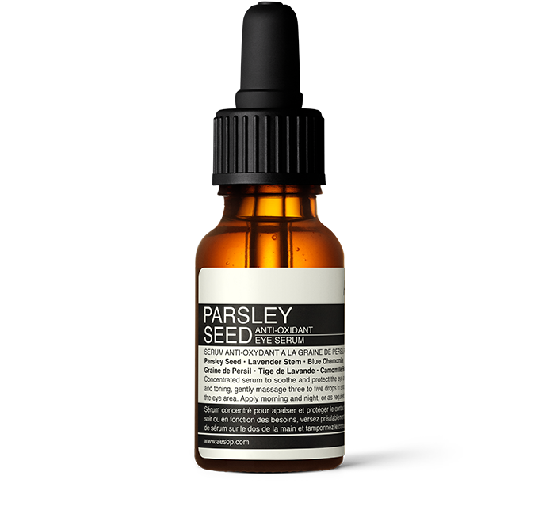
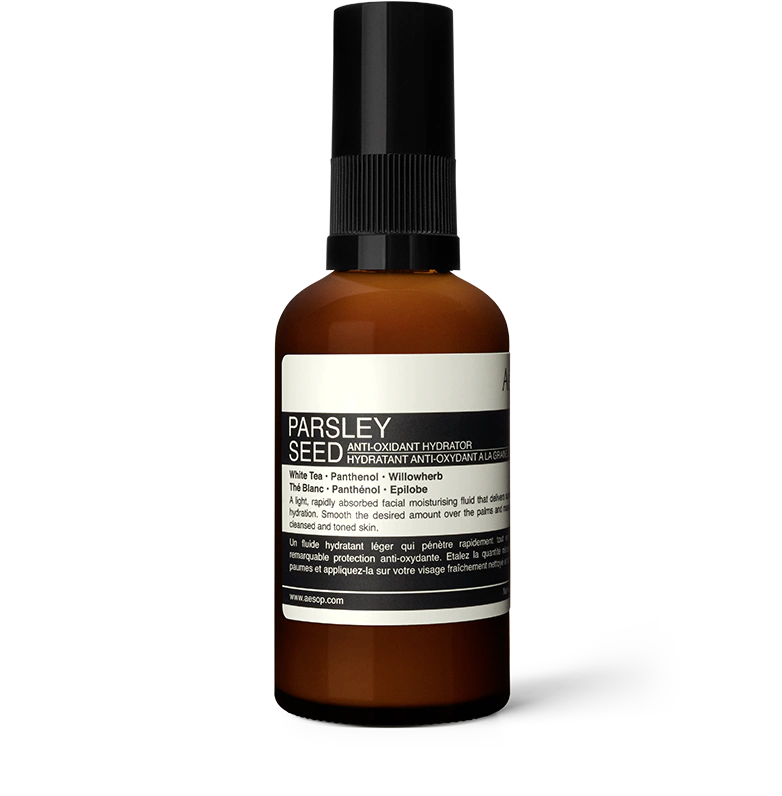
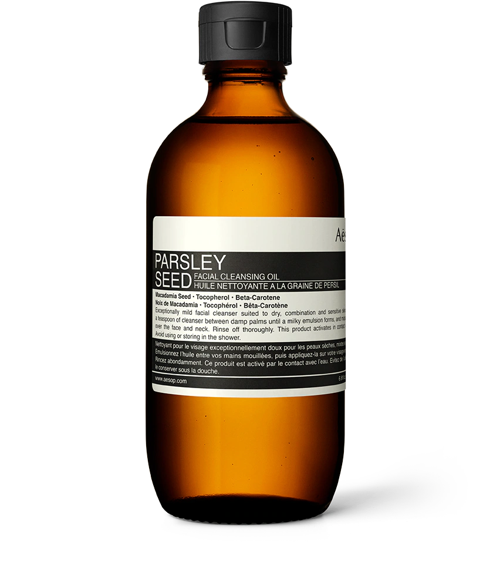
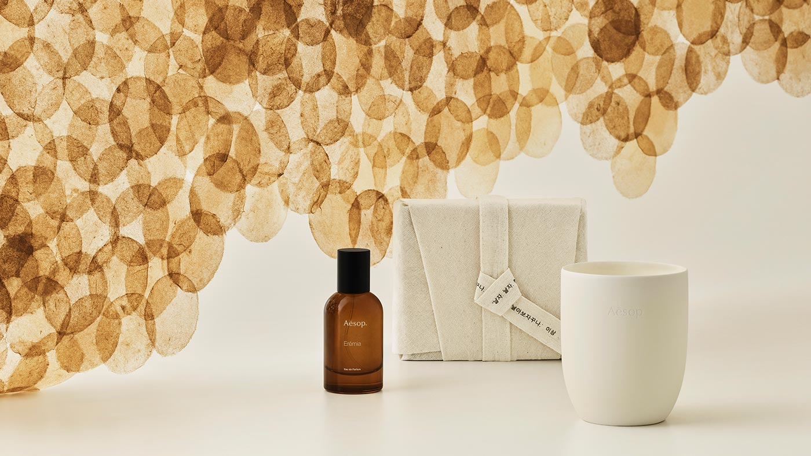
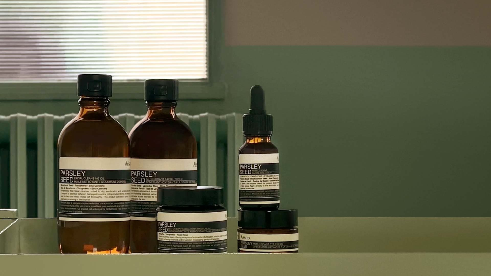

Aesop
도시 생활을 즐기는 이들을 위하여
파슬리 씨드 안티 옥시던트 인텍스 세럼
가벼운 텍스처로 전하는 피부를 위한 수분공급:편안하고 가벼운 환경 장벽


파슬리 씨드 안티 옥시던트 인텐스 세럼
피부를 탄탄하게 가꿔주는 하이드레이팅 세럼

파슬리 씨드 안티 옥시던트 페이셜 토너
중성,건성,민감성 피부파슬리 씨드 안티 옥시던트 페이셜 트리트먼트
집중적인 보습으로 피부를 탄탄하게 강화시킵니다.

파슬리 씨드 안티 옥시던트 아이 세럼
섬세한 눈가 피부를 탄탄하게 강화합니다.

파슬리 씨드 안티 옥시던트 하이드레이터
가벼운 질감, 빠른 흡수로 피부 강화


파슬리 씨드 안티 페이셜 클렌징 오일
모든 피부용 오일 타입의 클렌저파슬리 씨드 스킨 케어
도시 환경에서의 영양 공급과 피부 강화
파슬리 씨드 스킨 케어 레인지는 도시 거주자는 물론 도시에서 근무하는 분들이 데일리로 사용하기에 이상적인 풍부한 1)향산화 성분의 제품들로 구성되어 있습니다. 

더 아테네움